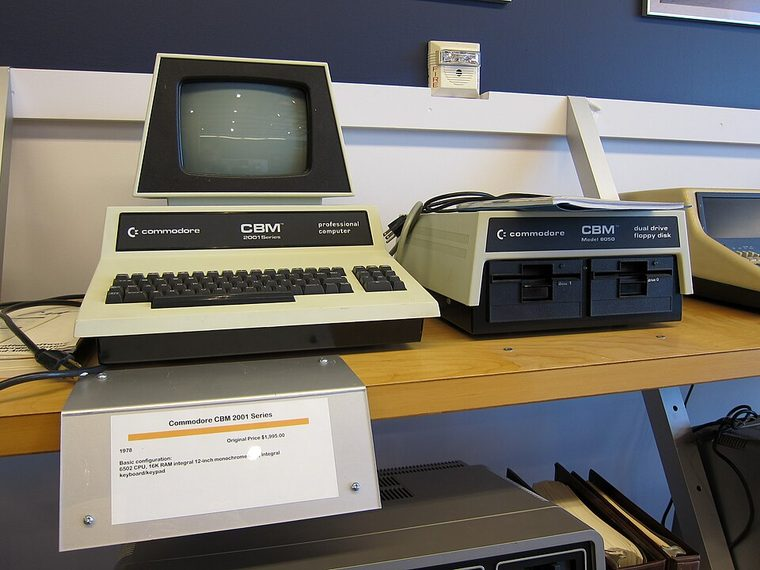
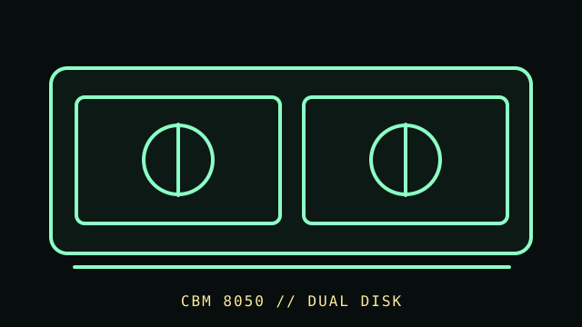

[ FLOPPY DRIVES // IDENTIFIED MODEL ]
Commodore 8050 Disk Drive
The Commodore 8050 is a dual-mechanism 5.25-inch disk subsystem in Commodore’s IEEE-488 drive family. It is an external computer peripheral with its own disk controller, not two ordinary PC floppy drives.


MODEL IDENTIFICATION: Commodore 8050; identify the full model, dual-drive enclosure, board/ROM revision, power label, and bus connector. This record keeps variant-dependent claims qualified; verify the physical unit and applicable manual before connecting, servicing, or formatting media.
Recorded specifications
| Catalog model | Commodore 8050 Disk Drive |
|---|---|
| Device type | External dual 5.25-inch drive subsystem with integrated controller |
| Interface / connector | IEEE-488 / GPIB host bus; drive command and format support depend on Commodore host and DOS. |
| Media / formats | 5.25-inch disks in Commodore 8050 formats. Supported geometry and capacity are format- and software-specific; check the matching manual rather than applying PC disk labels. |
| Revision caution | Match full model code, board/ROM/firmware revision, connector, cable, and documentation edition. Family-level ratings and host claims do not automatically apply to every unit. |
Host-controller and format compatibility
- Use a compatible IEEE-488 host or documented adapter; it is not an IEC serial 1541-family drive or a PC floppy controller.
- The 8050 uses a dual-drive hardware and DOS environment; host commands/software and disk formats must match. Confirm the model and board/ROM revision before service or substitution.
- Commodore 8050 media formats do not become PC-compatible by using the same 5.25-inch disk shell.
Preservation and safe cleaning
Disconnect mains and IEEE-488 before opening the unit. Do not insert media with mold, creases, or coating damage. Follow the 8050 service manual for cleaning and alignment; avoid head contact and unapproved solvents.
For a disk acquisition, record the physical media label and condition, drive/model/revision, controller, host, software/firmware, settings, and any errors. Keep original media and raw captures/images unchanged; checksum verified copies and document conversions as derivatives.
Primary manuals & standards/archive references
- Commodore dual 5.25-inch drive user manual, Part 320899 (October 1980) — Zimmers.netPeriod Commodore user documentation for its dual 5.25-inch drives.
- Commodore 8050/8250 addendum — Zimmers.netDrive-family addendum; confirm applicable model and revision.
- Commodore Disk Reference Manual (2031/4040/8050/8250) — Zimmers.netManufacturer disk command/reference documentation.
Source scope is stated per link. Prefer the matching manufacturer manual and revision over family summaries. Capacities and recording modes are omitted when not supported for the exact model and format.